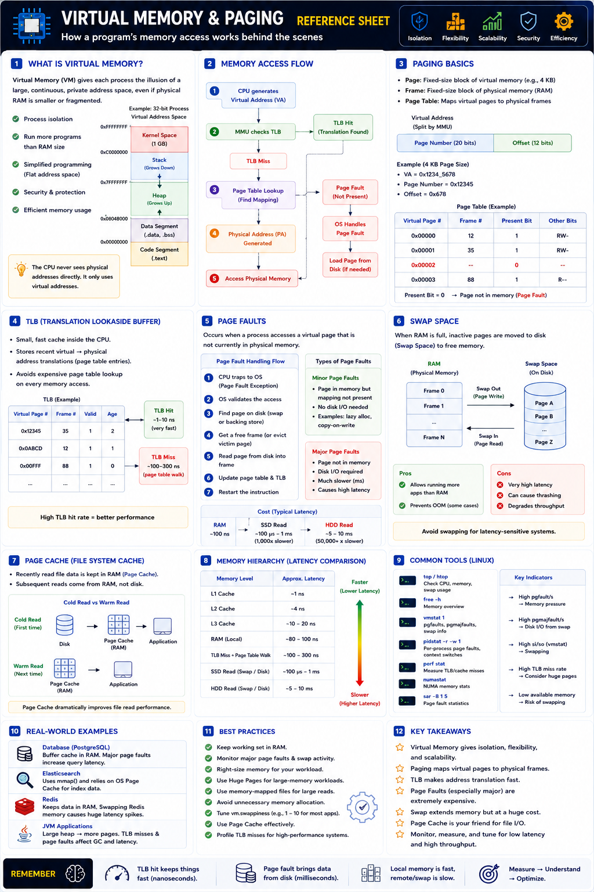

Page faults, swap, TLB — Staff Engineer level
The Big Picture
Every application believes it owns a large, continuous block of memory. In reality, the OS never gives applications direct access to physical RAM — instead every app works with Virtual Memory.
This abstraction provides isolation, security, scalability, and efficient memory management.
Why Virtual Memory Exists
Without it: apps could overwrite each other's memory, fragmentation would be severe, and running more apps than available RAM would be impossible.
Virtual Address vs Physical Address
Applications only generate Virtual Addresses (e.g. 0x7FFF12345678). The CPU cannot use these directly — the MMU translates them to Physical Addresses.
Applications never know where their data actually resides.
Paging — The Foundation
Virtual memory is divided into fixed-size Pages. Physical RAM is divided into Frames of the same size. The OS maps pages to frames through the Page Table.
| Page Size | Use Case |
|---|---|
| 4 KB | Standard (most common) |
| 2 MB | Huge Pages |
| 1 GB | Gigantic Pages |
Because pages are independent, physical memory does not need to be contiguous.
Page Table
Stores the mapping between Virtual Pages and Physical Frames. Every memory access consults this mapping.
| Virtual Page | Physical Frame | Status |
|---|---|---|
| Page 0 | Frame 12 | Present |
| Page 1 | Frame 35 | Present |
| Page 2 | — | Swapped Out |
| Page 3 | Frame 88 | Present |
Translation Lookaside Buffer (TLB)
Walking the page table for every access would be slow. The CPU contains the TLB — a cache for recent virtual→physical translations.
TLB Hit
Translation found immediately
≈ 1–10 ns
TLB Miss
Page table walk required
≈ 100–300 ns
Page Faults
A Page Fault occurs when the requested virtual page is not mapped to physical memory. The CPU traps into the kernel, which loads the page, then resumes execution.
Minor Page Fault
Page in memory, mapping missing. No disk I/O. Very fast.
Lazy alloc, shared libs, copy-on-write
Major Page Fault
Page not in RAM. Disk read required. Extremely expensive.
Latency Comparison
| Memory Level | Approximate Latency |
|---|---|
| L1 Cache | ~1 ns |
| L2 Cache | ~4 ns |
| L3 Cache | ~10–20 ns |
| RAM | ~80–100 ns |
| TLB Miss | ~100–300 ns |
| SSD Read | ~100 µs–1 ms |
| HDD Read | ~5–10 ms |
A major page fault can be 10,000–100,000× slower than a RAM access.
Swap Space
When RAM is full, Linux moves inactive pages to Swap on disk. Accessing a swapped page triggers a major page fault.
RAM Access
≈ 100 ns
Swap Access
≈ 1 ms (10,000× slower)
This is why production systems try to avoid swapping entirely.
Page Cache
Linux keeps recently accessed file data in RAM as the Page Cache, making repeated reads extremely fast.
| Scenario | Source | Performance |
|---|---|---|
| Cold Read | Disk | Slow |
| Warm Read | Page Cache | Very Fast |
This is why first application startup is slower, but restarting immediately is much faster.
Real-World Examples
| System | Behavior | Risk |
|---|---|---|
| PostgreSQL | Pages in buffer cache minimize faults | Swapping DB pages → severe query latency |
| Elasticsearch | Uses mmap(), relies on OS page cache | Major faults slow search performance |
| Redis | Entirely in RAM, almost no page faults | Swap causes dramatic latency spikes |
| JVM | Large heap in virtual memory | TLB misses & faults affect GC perf |
Staff Engineer Thinking
Junior
Why is memory usage high?
Senior
Are we swapping?
Staff asks
Production Failure Scenarios
High Query Latency
Cause: Major page faults while reading DB pages · Fix: Increase RAM or optimize working set
Application Suddenly Slow
Cause: System begins swapping under memory pressure · Fix: Reduce memory usage, tune vm.swappiness, or add RAM
High CPU with Low Throughput
Cause: Frequent TLB misses and page table walks · Fix: Use Huge Pages for large-memory workloads
Slow Application Startup
Cause: Cold page cache · Fix: Preload data or warm caches after deployment
Staff Engineer Decision Framework
| Scenario | Recommended Approach |
|---|---|
| Frequently accessed data | Keep in RAM |
| Large JVM or database | Consider Huge Pages |
| Memory pressure | Increase RAM or reduce working set |
| High swap activity | Tune vm.swappiness or disable swap |
| Large file reads | Use page cache or mmap() |
| Search indexes | Memory-map files for efficient access |
Virtual Memory Components
| Component | Responsibility |
|---|---|
| Virtual Memory | Private address space for each process |
| MMU | Virtual → Physical address translation |
| Page Table | Maps virtual pages to physical frames |
| TLB | Caches recent address translations |
| Page Fault | Handles missing pages |
| Page Cache | Caches file data in RAM |
| Swap | Extends RAM using disk |
Production Debugging Checklist
free, top, htop)vmstat, sar -B)swapon, vmstat, /proc/meminfo)perf stat)Key Takeaways
